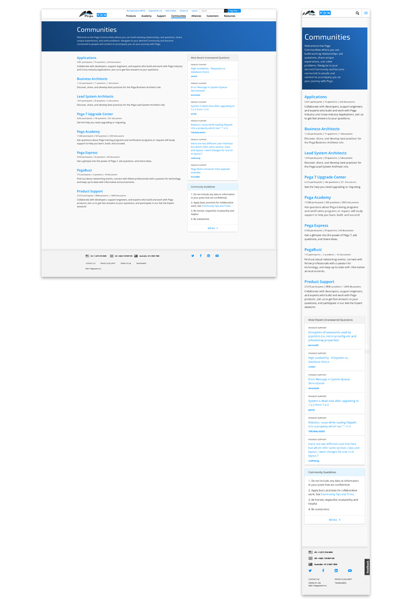

Design Problem
The PDN needs a page to host all its communities for a user to know where to ask a question. A returning user needs an ordered list to return to a community. However, the communities page currently lacks hierarchy. The page places more weight on certain communities, which drives traffic away from other forums. Users are biased and more likely to ask questions in these heavily weighted communities. Other communities suffer from a lack of traffic which is driving down the number of participants.
The user also does not have any context for what the community is and a better description is needed for the user to make a decision on what community to navigate to. The page needs to be easily scannable for a user and is currently overloaded with color creating a 'skittles' effect. For development, the page is currently static. Any new community page needs to be manually added.
Objectives and Key Results (OKRs)
- Balance the hierarchy of the communities page placing equal weight on all the communities.
- Increase traffic, number of posts and discussions in
- Applications
- Business Architects
- Lead System Architects
- Pega 7 Upgrade Center
- Pega Express
- PegaBuzz
- Dynamically redevelop page.
- Provide user with descriptions of each community
Process
Key Scenarios
- I am a new community member looking to ask a question in the appropriate community so that I can get the best possible answer.
- I am a community moderator of a underrated community looking to improve my traffic/posts/discussions in my forum so that I can have an active community.
Supporting information
- The current user page lacks hierarchy
- Users are not joining or asking questions in other communities.
- Too much weight is put on certain communities, making some forums bloated while others lack substance.
- Biased towards Pega Academy and Product Support
Result
